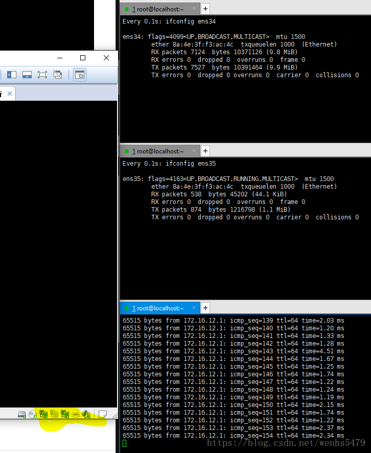
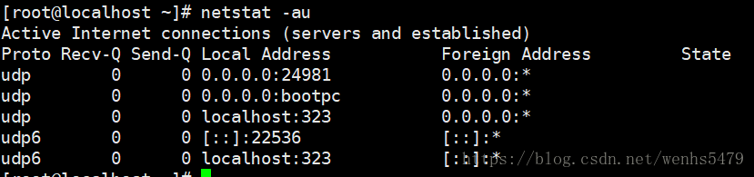

高可用网络配置

文章目录
1.添加两块网卡，配置bonding
1 2 3 4 5 |
nmcli connection add type bond mode balance-rr con-name bond0 ifname bond0 ipv4.method manual ipv4.addresses 192.168.161.128/24 ipv4.gateway 192.168.161.1 ipv4.dns 192.168.161.1 nmcli connection add type bond-slave con-name bond-slave0 ifname ens34 master bond0 nmcli connection add type bond-slave con-name bond-slave1 ifname ens35 master bond0 |

2.清除bonding配置，并配置team，配置成主备模式，并模拟主备故障
清除bonding
1 2 |
nmcli device delete bond0 rm -rf /etc/sysconfig/network-scripts/ifcfg-bond* |
配置team成主备模式
1 2 3 4 5 6 7 |
nmcli connection add type team con-name team0 ifname team0 config '{"runner":{"name":"activebackup"}}' ipv4.addresses 172.16.12.250/24 ipv4.gateway 172.16.12.2 ipv4.dns 172.16.12.2 ipv4.method manual
nmcli connection add type team-slave con-name team0-port1 ifname ens34 master team0
nmcli connection add type team-slave con-name team0-port2 ifname ens35 master team0
systemctl restart network |

模拟主备故障
无故障时:其中一个网卡工作,另外一个网卡不工作

模拟故障:虚拟机断开工作的网卡,发现另外一个网卡开始工作

故障解除:虚拟机重新连接上所用网卡,发现2个都工作,但是一个接收,一个发送

3.使用ip和ifconfig命令配置ip地址（设置多个ip地址）
IP:发现不加掩码默认为32位

ifconfig:发现不加掩码,默认掩码为24位

4.树状显示系统进程树，找到NetworkManaer进程的位置
1
|
pstree |grep NetworkManager |

5.列出所有和网络相关的服务
1
|
systemctl list-unit-files|grep network |


6.使用tcpdump抓取icmp流量，并关闭缓冲区
1
|
tcpdump icmp -i ens33 -b |

7.ping 宿主机，发送30个包，每个包设置1000
1
|
ping -c30 -s1000 192.168.161.206 |
8.查看所有udp网络套接字
1 2 3 |
ss -ua 或 netstat -ua |

9.查看所有tcp/udp套接字，并显示原端口，不解析端口名字
1
|
ss -tuan |

10.查看所有tcp/udp网络套接字，并解析ip地址。
1
|
ss -tua |

11.查看宿主机的所有arp列表
1
|
arp |

12.关闭lo网卡
1
|
ifconfig lo down |
13.开启lo网卡
1 2 3 |
ifup lo 或 ifconfig lo up |
14.清空lo网卡上所有ip地址
1
|
ip address flush dev lo |
15.修改一个新添加网卡的mac地址
a,用虚拟机修改

b,用命令修改：
1 2 3 |
ifconfig ens34 hw ether '00:0c:29:4d:6a:51' 或者 ip link set dev ens34 address '00:0c:29:4d:6a:47' |